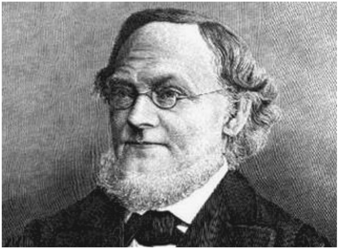
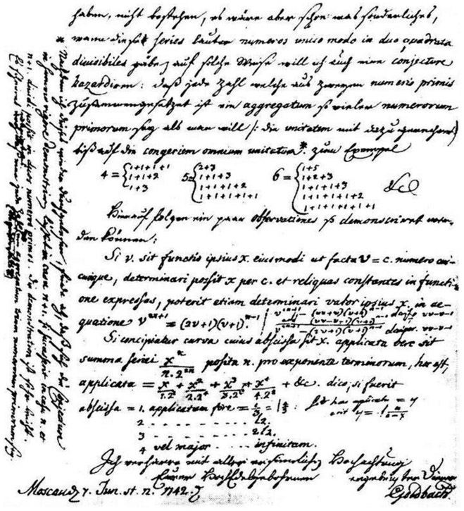

Christian Goldbach: German (1690–1764)
In almost every field of endeavor, there are brilliant people who have remained famous to this day, largely because of one sterling success in their career. For example, the French composer Georges Bizet (1838–1875) is famous today for his opera Carmen. The American author J. D. Salinger (1919–2010) is largely remembered for his novel The Catcher in the Rye. Then there is the composer Engelbert Humperdinck (1854–1921), whose opera Hänsel und Gretel keeps his name current today. And so it is with Christian Goldbach, who is largely quoted today for the conjecture that bears his name and continued to challenge mathematicians for centuries.
Christian Goldbach (see fig. 21.1) was born on March 18, 1690, in the city of Königsberg, which was part of Brandenburg-Prussia (today it is Kaliningrad, Russia).1 His father was a pastor in the Protestant church there, and Christian studied at the Royal Albertus University in the same city. He studied law and medicine as well as delving a bit into some mathematics. From 1710 until 1724, he traveled throughout Europe, visiting the German states, Holland, Italy, England, and France. During his visits, he sought to meet the leading scientists. For example, in 1711, he met the German mathematician and philosopher Gottfried Wilhelm Leibniz with whom he carried on a correspondence—written in Latin—for the next two years.
In 1712, he met a few mathematicians in London, including Nicolaus (I) Bernoulli and Abraham de Moivre, and he was also referred to Jacob Bernoulli. These encounters began to motivate him toward the field of mathematics. His increased interest in mathematics was brought about by meeting Nicolaus (II) Bernoulli in Venice in 1721, who then connected him with his younger brother Daniel Bernoulli, with whom a correspondence continued for another seven years. It should be noted that Goldbach was multilingual; consequently, his diary was written in German and in Latin, and his letters were written in German, Latin, French, and Italian. He also had command of the Russian language for legal documents.
In 1724, when Goldbach returned to Königsberg, he met with Georg Bernhard Bilfinger and Jakob Hermann. These two mathematicians had a great influence on Goldbach’s pursuit of mathematics. His reputation in the field rose rapidly, and in 1725, Goldbach was offered a position as professor of mathematics and history at the St. Petersburg Academy of Sciences. This resulted from a reputation he built over years—reading articles by the famous mathematicians and then producing his own, which, in retrospect, were not terribly profound.
Goldbach held the position of recording secretary from the opening of the Academy of Sciences in December 1725 until January 1728. During this time, he was able to navigate the political circumstances in St. Petersburg, which was Russia’s capital at that time.
In 1727, the famous and prolific Swiss mathematician Leonhard Euler arrived in St. Petersburg, where he met Goldbach, who shortly thereafter, in 1729, moved to Moscow but continued a correspondence with Euler that lasted another thirty-five years. Goldbach’s role as a tutor to the royal family brought him back to St. Petersburg in 1732, where he once again became active in the Academy of Sciences. He actually was one of two people—the other being J. D. Schuhmacher—who were responsible for the administration of the Academy, and, consequently, he became increasingly more involved in the Russian government. His language competence—Latin, French, German, as well as Russian—allowed him to continuously increase his importance in the Russian government. In 1740, he resigned from the academy and was appointed to an important position in the Ministry of Foreign Affairs. In 1760, he was asked to establish a program of education for the royal family, which remained in effect for the next hundred years.
So, from where did Goldbach’s legacy in mathematics evolve? As we mentioned earlier, Goldbach carried on a regular correspondence with Euler. In 1742, he proposed a conjecture to Euler that every integer greater than 2 can be expressed as a sum of three prime numbers. For example, 3 = 1 + 1 + 1; 4 = 1 + 1 + 2; 5 = 1 + 1 + 3; 31 = 23 + 7 + 1, and so on. It should be noted that Goldbach considered the number 1 to be a prime number, while today it is no longer considered a prime number. Euler responded to Goldbach with an equivalent form of this conjecture that all even integers greater than 2 can be expressed as the sum of two prime numbers. For example, 6 = 3 + 3; 8 = 3 + 5; 10 = 5 + 5; 31 = 29 + 2, and so on. Euler further stated that he was quite certain that this conjecture is true, but he was not able to prove it. Nor has anyone else for the past few centuries!
It is this conjecture that makes Goldbach famous still today, since no one has ever proved that it is a correct conjecture; but, on the other hand, no one has ever proved that it is not a correct conjecture, either. As a matter of fact, in 2012, the Portuguese professor Tomás Oliviera e Silva has shown the conjecture to be true for all integers less than 4,000,000,000,000,000,000, or, written succinctly, 4 ∙ 10182. Today we write Goldbach’s conjecture as follows: Every integer greater than 5 can be written as a sum of three primes—not including the number 1 as a prime.

Figure 21.1. Christian Goldbach.

Figure 21.2.
It would appear that Goldbach considered mathematics somewhat recreational, and he motivated his correspondence partner, Euler, to test these conjectures to the first 2,500 numbers, and finding no fault.
It should be noted that a weak version of this conjecture, namely, that all odd numbers greater than 7 are the sum of three odd primes, seems to have been proven by Harald Andres Helfgott, in 2013.3
Goldbach’s life ended on November 20, 1764, in Moscow, when he was seventy-four years old. His legacy, as we said earlier, resides with his famous conjecture, which to this day has never been proved true for all numbers, thus, it remains a conjecture and not a theorem.